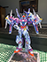
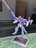
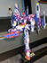
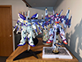
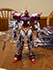

I just finished applying waterslide decals to this guy, and, boy howdy, he's quite a kit! Before I go into further detail, to summarize, my thoughts are overall very positive, and I'm very happy with the finished product. The build process was quite nice, and as my first experience with a Chinese kit, IN ERA+ really knocked it out of the park. Anyways: details!
When it comes to the main model itself, the legs were the most entertaining and high-quality portion of the build. They're made quite nicely, and I quite enjoy how the feet and ankles connect to the leg itself. They're also mostly undergated, which is nice. There's what seems to be a thruster on the backside of the lower leg, and that portion is the weakest part of the entire build. No matter how I fitted them into the leg, it always seemed wrong, and even now the right leg can bend significantly further than the left (which feels like something will snap if I try to bend it any further). The waist, meanwhile, feels pretty loose, and "just okay". The legs connect to the waist in a contraption similar to the Zeta Ver.ka, where the actual connector can swivel up and down, but there's no way to lock it. Thus, when posing, the legs will swivel when you're trying to move them in different ways. It's not super great. The connectors for the two things on the side of the waist also feel quite mediocre.
For the torso, it's passable. The main front chest piece sits loosely, which I greatly dislike, but it looks perfectly fine, so. No harm. The joint for the waist, however, is incredibly loose, and when posing it's almost impossible to get it to not lean backwards. It's a real shame, too! The shoulder connectors are perfectly okay, though the arms themselves aren't that good. The build is odd, and though I like the forearm, the elbow can only bend at 90 degree angle, which is terrible when you're trying to make interesting poses. I also dislike the way the wrist functions.
The head is perfectly passable, with the exception of the extremely bizarre way they expect you to connect the red piece to the rest of the head. If you don't do it perfect your first try, you'll stretch the piece weirdly and put stress marks on the very small piece of plastic. It looks really bad up close, though it doesn't quite come off through my iPhone SE camera.
Speaking of stress marks, universally, the plastic on this kit has really weird stress marks and almost-crack-looking areas. You're not supposed to panel line this guy or use Mr. Mark Softer, so I've not, but even without those some of the plastic still looks a little fucked up up close. The plastic *feels* cheaper than recent Bandai kits, too. I just built an MG Build Strike Full Package, and the plastic on the Thunderbolt feels better than that, but it's definitely worse than the MG Zeta Ver.ka.
Apart from the main model, the weapons and the backpack are phenomenal. They're so fucking good 😭 oh my. They're sooooo good. The railgun is massive, and building it is a joy (except for the actual railgun barrel, which is weird and doesn't connect right). And the backpack? Boy howdy, it's the best model kit backpack I've probably ever built. It's so well-engineered I was actively amazed. There's a weird stress point on the main part of the backpack where it connects to the, uh, further back portion, but other than that, it's astounding how good it is. I wish the main model's waist was better so it could better pose with the backpack, because again, the backpack? Insane! Truly insane how good it is.
And, having waterslided the kit, the waterslide decals are perfectly fine. Not the best I've encountered, nor the worst, but. Just pretty okay. Did the job. There's a lot of them, and they add a lot of detail to the kit, and they're styled well, so. They're nice. Good waterslide decals, would apply again. Oh, and the included stand is also quite okay at keeping the model up. It connects to the butt, rather than the upper back or backpack, so the entire backpack's weight is put upon the waist, causing the posing issues I've previously mentioned. Bummer! The gold standard really is the MGSD Freedom, idk what else to say.
Overall? Worth $70. It's a beaut, and the process is lengthy. On the "build quality" scale, with the MG Phenex being a 0 and the MGSD Freedom being a 10, it's a solid 6? Maybe 5.5? Which, to be clear, is still quite good. And, in terms of the finished look, I quite like it. Maroon is a very nice vibe.
As an aside, after coding the topmost photo part of this review in a coffee shop, on the way out a guy stopped me and heavily complimented my outfit down to the individual articles of clothing. I thanked him and, being a being of strength and integrity, asked for his number, afterwhich he replied he had a girlfriend. He then held his fist up for a fist bump, which I gave him. I then left the store. So, erm... that happened 🥴 amirite fellas? Honestly dunno what came over me to ask a guy for his number. I think that's the most confident I've felt in weeks.
The fit that I got complimented on 🥺